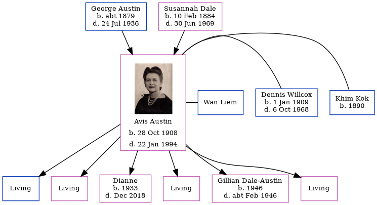

George Frederick Austin c1879 - 1936
[ Home ] | [ Calendar ] | [ Surnames Index ] | [ Census Index ] | [ Family History ]A baker's assistant, George Austin, the husband of Susannah Elizabeth Dale (the second cousin twice-removed on the father's side of Nigel Horne), was born in Sunningdale, Berkshire, England c. 18791 and married Susannah (with whom he had 5 children: George Frederick, Eustace Godfrey, Avis Muriel, Aubrey Bryon and Cynthia Roberta) at Church of St Martha On the Hill, Chilworth, Surrey, England on Jun 21, 19032. On Apr 2, 1911, he was living at 2 Heaton Cottages, Heaton Road, Canterbury, Kent, England3.
He died on Jul 24, 1936 in Surrey1 (heart attack).
Children
- George Frederick was born on May 11, 1904
- Eustace Godfrey was born on May 31, 1906
- Avis Muriel was born on Oct 28, 1908
- Aubrey Bryon was born on Jun 28, 1915
- Cynthia Roberta was born on Mar 18, 1924
Citations
- England & Wales deaths 1837-2007 - Findmypast
- England & Wales Marriages 1837-2005 - Findmypast
- 1911 Census for England & Wales - Findmypast (was age 31 and the head of the household)
Media
George Frederick Austin - Probate

England & Wales deaths 1837-2007 - BMD/D/1936/3/AZ/000022/095
Family Tree
Generated by ged2site. Last updated on Jun 11, 2024